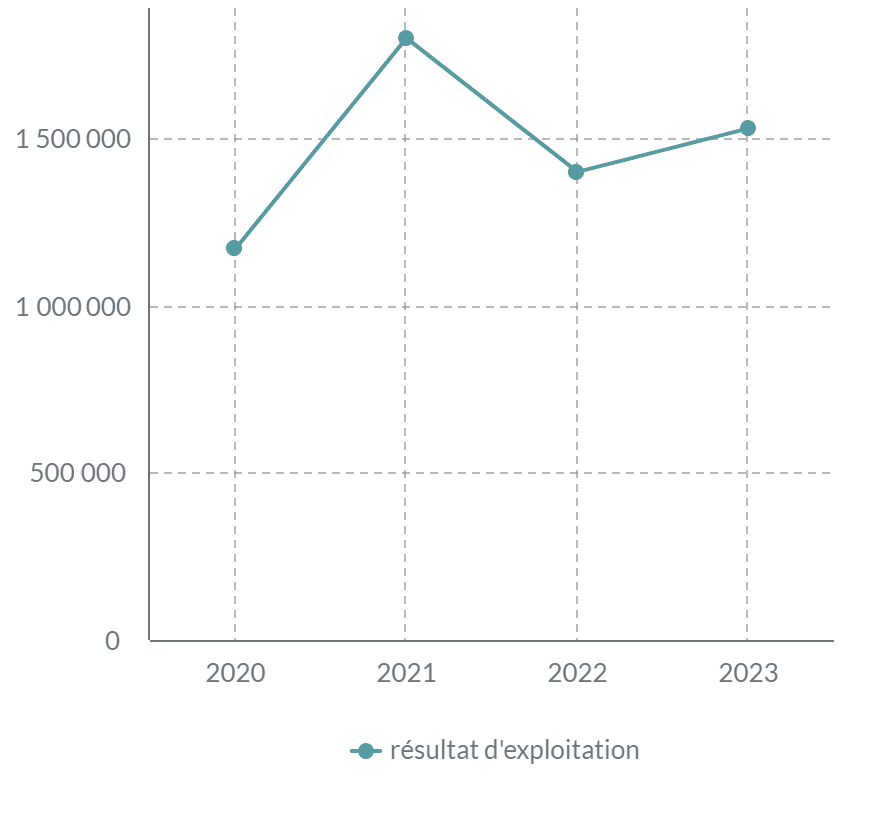
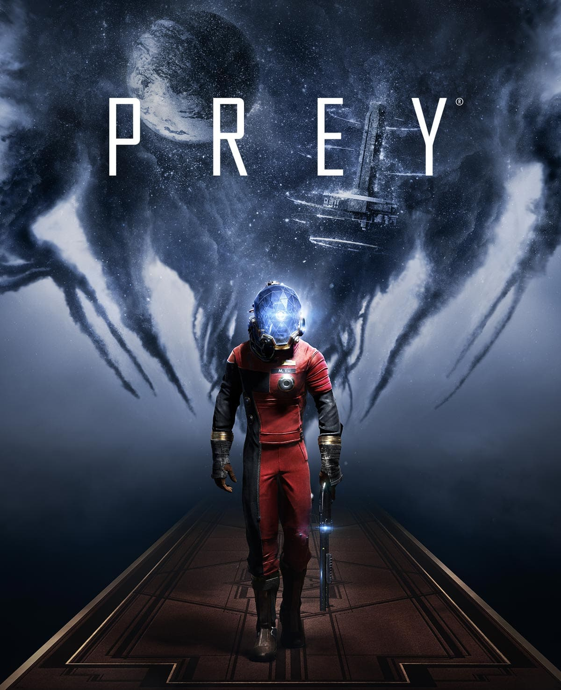

ECONOMIE
ATTENTION : il est important de noter que toutes les informations présentent sur cette page n'ont pas ete mises a jour depuis 2023.
INTRODUCTION AU CONTEXTE ECONOMIQUE
Arkane Studios, fondé en 1999 et acquis par Microsoft en 2021 lors du rachat de ZeniMax Media pour 7,5 milliards de dollars, est un développeur de jeux vidéo renommé. Célèbre pour des franchises comme Dishonored et Prey, le studio a su s’imposer dans l'industrie grâce à ses créations immersives. Cependant, malgré son succès critique, Arkane a récemment traversé une période difficile.
En 2023, le lancement de Redfall, développé par Arkane Austin, a été mal accueilli en raison de problèmes techniques et de critiques négatives. Cet échec commercial a conduit à la fermeture d'Arkane Austin, une décision marquante dans l'histoire du studio.
Aujourd'hui, Arkane Lyon continue ses activités, soutenu par la stratégie de contenu exclusif de Microsoft via le Game Pass. Le studio, qui compte environ 150 employés, doit désormais s’adapter à l’évolution du marché tout en préservant son identité créative.
Depuis 2020, le résultat d'exploitation d'Arkane Studios a connu des fluctuations régulières. En 2020, il s'élevait à 1,17 M€. En 2021, il a enregistré une hausse de 53 % pour atteindre 1,8 M€. Cependant, en 2022, il a légèrement baissé à 1,4 M€, soit une diminution de 11,11 %. En 2023, le résultat a repris une légère croissance, atteignant 1,53 M€, correspondant à une augmentation de 9,29 %. Ces variations reflètent bien le classement de l'entreprise basé sur son résultat d'exploitation que nous pourrons voir ci dessous.

La rentabilité financiere de l'entreprise a diminué depuis 2020 en passant de 21,32% en 2020 a 4.48% en 2022 malgré une tres legere hausse en 2021 a 21,50%. dans l'ensemble, l'année 2022 est une année moins bonne que les autres au niveau des performances pour le studio lyonnais comme nous pouvons le voir avec la baisse de sa capacité d'autofinancement de 31,08% en 2021 a 10,02% en 2022 ou encore la diminution de la rentabilité nette finale qui passe de 27,64% en 2021 a 6,52% en 2022
Ce graph nous présente l'évolution du chiffre d'affaire d'Arkane studios de 2015 à 2023 .
Depuis 2015, le chiffre d'affaires du studio a presque doublé, avec une croissance totale de 90,91%. Après une baisse initiale de 18,18% entre 2015 et 2017, le chiffre d'affaires a fortement progressé de 122,22% jusqu'en 2021, notamment avec des lancements à succès comme *Prey* et *Dishonored 3*. L'année 2019, marquée par la crise COVID, a vu une hausse significative. En 2021, une légère baisse de 5% a suivi le rachat par Microsoft, période durant laquelle aucun jeu majeur n'a été lancé avant *Deathloop* en fin d'année. De 2022 à 2023, le chiffre d'affaires a repris avec une croissance de 10,53%, soutenue par le succès de ce dernier titre.
ECOLOGIE
Partage des idéologie et incite ses joueurs a recycler et tente de les sensibiliser a cette idee de recyclage notamment grace a son jeu PREY dans lequel les joueurs peuvent recycler n'importe quel element a n'importe quel moment. Integrer des notions telles que celles ci dans un jeu qui n'a rien a voir avec est une tres bonne idee qui peut sensibiliser beaucoup de joueurs peut importe leur age.
